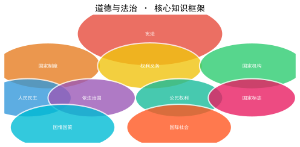

涵盖初中道德与法治全部核心考点 · 中考复习备考专用
【材料】小华进入初中后感觉学习科目增多、难度加大，和小学同学分开后感到孤独，不知道如何交新朋友。请结合所学知识，为小华提几条建议。
参考答案：
① 调整心态：中学生活是新的起点，要以积极心态面对变化，主动适应新环境。
② 学会学习：掌握科学学习方法，合理安排时间，主动与老师同学交流学习心得。
③ 主动交往：敞开心扉，真诚待人，积极参加集体活动，在新集体中建立友谊。
④ 认识自我：正确认识自己的优点和不足，树立自信，做更好的自己。
⑤ 制定目标：树立新目标，制订合理的学习和生活计划，充实地度过中学生活。
【材料】小华在社交软件上认识了一个网友，两人聊得很投机。网友约小华见面，小华很犹豫。请运用所学知识为小华提出建议并说明理由。
参考答案：
① 小华应当慎重对待，不建议轻易与网友见面。网络交友具有虚拟性，对方的真实身份难以确认。
② 如果一定要见面，应选择公共场所，由家长或信任的朋友陪同，确保自身安全。
③ 要增强自我保护意识，不轻易透露个人隐私信息（家庭住址、学校、联系方式等）。
④ 虚拟世界的交往不能替代现实中的朋友，应将更多精力投入到现实的交往中。
⑤ 要学会理性辨别网络信息，不轻信网友的邀请和承诺。
【材料】小明因为玩手机被父母批评，和父母大吵一架后把自己关在房间里。如果你是小明的好朋友，你会怎么劝说他？
参考答案：
① 理解父母的良苦用心：父母的批评是出于对我们的关心和爱护，是为了我们的健康成长。
② 主动沟通：冷静下来后主动与父母交流，说明自己的真实想法，同时认真听取父母的意见。
③ 换位思考：站在父母的角度理解他们的担忧，调控好自己的情绪，避免冲动言行。
④ 达成共识：与父母共同制定合理的手机使用规则，用行动证明自己能合理使用电子产品。
⑤ 孝亲敬长是传统美德也是法律义务，我们要用恰当的方式表达对父母的感恩和尊重。
【材料】小李期中考试成绩不理想，受到老师批评后情绪低落，觉得自己不是学习的料。请运用"生命的思考"相关知识开导小李。
参考答案：
① 认识到挫折是人生的一部分，学习中的挫折也是成长的机会，不必过度消极。
② 发掘自身力量：培养面对困难的勇气和坚强意志，分析考试失利的原因，找到改进方法。
③ 寻求外部帮助：主动向老师、同学和家长求助，借助他人的经验和支持战胜困难。
④ 增强生命韧性：培养乐观积极的心态，从失败中汲取教训，提升自己的抗挫折能力。
⑤ 生命价值由自己创造：一次考试不代表全部，只要不懈努力，每个人都能实现自己的价值。
| 情绪调节方法 | 具体做法 | 注意事项 |
|---|---|---|
| 改变认知评价 | 换个角度看问题，变消极为积极 | 需要理性分析，避免盲目乐观 |
| 转移注意 | 做感兴趣的事、运动、听音乐 | 不是逃避问题，适当后需面对 |
| 合理宣泄 | 倾诉、写日记、适当运动 | 不伤害他人，不破坏公物 |
| 放松训练 | 深呼吸、冥想、渐进式肌肉放松 | 适合紧张焦虑时使用 |
| 行为规范 | 产生方式 | 实施手段 | 调整范围 | 约束力 |
|---|---|---|---|---|
| 法律 | 国家制定或认可 | 国家强制力 | 全体社会成员 | 最强，普遍约束 |
| 道德 | 自发形成/社会共识 | 内心信念、舆论、习惯 | 范围更广 | 靠自觉 |
| 纪律 | 特定组织制定 | 组织内部处罚 | 组织成员 | 组织内部约束 |
参考答案：
① 未成年人身心发育尚不成熟，自我保护能力较弱，辨别是非和自我控制能力不强。
② 未成年人容易受到不良因素的影响和不法侵害，需要法律给予特殊保护。
③ 未成年人的生存和发展事关人类的未来，保护未成年人就是保护国家和民族的明天。
④ 我国已形成家庭保护、学校保护、社会保护、司法保护、网络保护、政府保护六大保护体系。
⑤ 特殊保护≠过度保护，未成年人在受到保护的同时也要增强自我保护的意识和能力。
【材料】某校学生利用网络开展"助农直播"，帮助当地农民销售滞销农产品；但也有一些学生沉迷网络游戏导致成绩下降。请结合所学知识谈谈网络的利与弊。
参考答案：
① 网络丰富日常生活：网络让信息传递和交流变得方便快捷，助农直播正是利用网络为社会发展做贡献的体现。
② 网络推动社会进步：为经济发展注入新活力（直播带货），促进民主政治发展，推动文化传播。
③ 网络也存在弊端：沉迷网络游戏会影响学习和身心健康；网络上存在虚假信息和诈骗行为。
④ 合理利用网络：提高媒介素养，学会筛选有用信息，合理安排上网时间，自觉抵制不良诱惑。
⑤ 传播网络正能量：遵守网络道德和法律，利用网络平台为社会进步贡献力量。
| 分类 | 对社会的危害 | 违反的法律 | 应受的处罚 |
|---|---|---|---|
| 一般违法行为 | 较轻 | 行政法/民法 | 行政处罚/民事赔偿 |
| 犯罪 | 严重 | 刑法 | 刑罚处罚 |
| 违法行为类型 | 违反的法律 | 举例 | 后果 |
|---|---|---|---|
| 民事违法行为 | 民法典 | 欠债不还、侵犯他人名誉权 | 承担民事责任 |
| 行政违法行为 | 行政法 | 闯红灯、扰乱公共秩序 | 行政处罚（警告、罚款、拘留） |
| 刑事违法行为（犯罪） | 刑法 | 抢劫、故意伤害致人重伤 | 刑罚（管制、拘役、有期徒刑等） |
参考答案：
① 认清犯罪的危害：犯罪不仅对受害者造成伤害，也会毁掉自己的人生和家庭幸福。
② 杜绝不良行为：不良行为可能发展为违法犯罪，要从小事做起，避免沾染不良习气。
③ 增强法治观念：学习法律知识，明白什么能做、什么不能做，依法规范自己的行为。
④ 加强自我防范：提高辨别是非的能力，谨慎交友，自觉抵制不良诱惑。
⑤ 学会依法维权：当合法权益受到侵害时，运用法律武器保护自己，不采取非法手段。
参考答案：
① 增强国家安全意识：树立总体国家安全观，自觉维护国家安全，不做损害国家安全的事。
② 遵守法律法规：严格遵守有关国家安全的法律规定，不泄露国家秘密。
③ 提高防范意识：在涉外交往中保持警惕，不向陌生人透露内部信息，发现可疑行为及时举报。
④ 学习相关知识：了解国家安全相关知识，增强辨别能力，防范境外势力渗透。
⑤ 积极宣传监督：向身边的人宣传国家安全知识，对损害国家安全的行为勇于举报（12339举报电话）。

参考答案：
① 从内容上看：宪法所规定的内容是国家生活中带有全局性、根本性的问题（如国家性质、根本制度、根本任务等），而其他法律规定的是国家生活中的一般性问题。
② 从法律效力上看：宪法具有最高的法律效力，是其他法律的立法基础和依据，其他法律不得与宪法相抵触。
③ 从制定和修改程序上看：宪法的制定和修改程序比普通法律更加严格，体现了宪法的权威性。
④ 宪法是国家法治统一的基础，全面依法治国首先要依宪治国。
| 类别 | 具体权利 | 关键点 |
|---|---|---|
| 政治权利和自由 | 选举权和被选举权（基本政治权利）、言论出版集会结社游行示威自由 | 行使权利要在法律允许范围内 |
| 人身自由 | 人身自由不受侵犯、人格尊严不受侵犯、住宅不受侵犯、通信自由 | 人身自由是公民最基本、最重要的权利 |
| 社会经济权利 | 财产权、劳动权、物质帮助权 | 国家保障弱势群体的物质帮助权 |
| 文化教育权利 | 受教育权、文化权利（科研、文艺创作等） | 受教育权兼具权利和义务双重属性 |
公民的权利和义务相互依存、相互促进。权利和义务是统一的——公民既是合法权利的享有者，又是法定义务的承担者；不能只享受权利不履行义务，也不能只承担义务不享受权利。
| 对比维度 | 权利 | 义务 |
|---|---|---|
| 性质 | 公民可以自主选择是否行使 | 公民必须依法履行，不可放弃 |
| 关系 | 权利和义务相互依存、相互促进；二者合一（如劳动、受教育） | |
| 原则 | 公民在行使自由和权利时不得损害他人合法权益；依法履行义务，法律禁止的坚决不做 | |
【材料】小张认为"我的权利我做主"，在小区公共区域私自搭建储物间，邻居劝阻他也不听。请结合所学知识对小张的行为进行评析。
参考答案：
① 小张的行为是错误的。公民在行使自由和权利的时候，不得损害国家的、社会的、集体的利益和其他公民的合法权利。
② 小区公共区域属于全体业主共有，私自搭建侵害了其他业主的合法权利。
③ 公民的权利和义务是统一的，享受权利的同时也要履行遵守社会公德和相关法律的义务。
④ 小张应当停止侵权行为，拆除违建，恢复公共区域原状，依法维护邻里和谐。
⑤ 这个案例启示我们：行使权利有界限，不能为所欲为；要依法行使权利，自觉履行义务。
| 经济成分 | 地位 | 举例 | 国家政策 |
|---|---|---|---|
| 国有经济 | 主导力量 | 中国石油、中国铁路、中国银行 | 保障发展 |
| 集体经济 | 公有制重要组成部分 | 农村合作社、乡镇企业 | 鼓励发展 |
| 私营/个体经济 | 非公有制，重要组成部分 | 小商店、民营企业 | 鼓励支持引导 |
| 外资经济 | 非公有制，重要组成部分 | 外商独资企业、中外合资 | 依法保护 |
参考答案：
① 树立创新意识：认识到创新对国家发展和个人成长的重要性，敢于突破常规思路。
② 认真学习科学文化知识：知识是创新的基础，只有掌握扎实的知识才能进行有效创新。
③ 善于观察勤于思考：关注生活中的问题，积极思考解决方案，注重小发明小创造。
④ 积极参加科技活动：参加科技创新大赛、机器人编程等实践活动，在实践中提升创新能力。
⑤ 尊重和保护知识产权：学习相关法律知识，不抄袭他人成果，保护自己的创新成果。
参考答案：
① 民主选举：依法参与人大代表选举，行使选举权和被选举权，选出代表人民意愿的代表。
② 民主决策：通过社情民意反映制度、专家咨询制度、社会听证制度等参与公共决策。
③ 民主管理：参与基层群众自治管理，如通过村委会、居委会参与社区事务管理。
④ 民主监督：通过人大代表、新闻媒体、信访举报等途径行使监督权，促进政府依法行政。
⑤ 公民参与民主生活需要具备社会责任感和主人翁意识，理性客观地表达诉求和意见。
参考答案：
① 树立绿色发展理念：学习和宣传环保知识，增强节约资源和保护环境的意识，践行"绿水青山就是金山银山"的理念。
② 践行低碳生活方式：节约用水用电，减少使用一次性塑料制品，优先选择公共交通或骑行出行。
③ 垃圾分类与回收：学习垃圾分类知识，将可回收物、有害垃圾、厨余垃圾和其他垃圾正确分类投放。
④ 参与环保活动：积极参加植树造林、清洁社区等环保公益活动，以实际行动保护环境。
⑤ 勇于监督举报：发现破坏环境的行为及时劝阻或向有关部门举报，依法维护生态环境。
参考答案：
① 提出"一带一路"倡议：推动沿线国家基础设施建设，促进贸易畅通和资金融通，实现共同发展。
② 积极参与全球治理：在气候变化、反恐、维和等国际事务中发挥建设性作用，展现负责任大国担当。
③ 推动国际合作抗疫：向国际社会提供疫苗和医疗物资援助，倡导构建人类卫生健康共同体。
④ 提供中国方案：提出全球发展倡议、全球安全倡议、全球文明倡议，为全球治理贡献中国智慧。
⑤ 坚持互利共赢：推动经济全球化朝着更加开放、包容、普惠、平衡、共赢的方向发展。
参考答案：
① 树立远大理想：将个人梦想融入中国梦，把个人前途与祖国命运紧密联系在一起。
② 努力学习科学文化知识：提高自身素质，为将来服务社会、报效祖国打下坚实基础。
③ 关注国家发展：了解国家大政方针，增强责任感和使命感，把个人发展融入到国家需要中去。
④ 培养创新精神和实践能力：在实践中增长才干，为国家的科技进步和经济发展做贡献。
⑤ 积极践行社会主义核心价值观：从身边小事做起，用实际行动服务社会、奉献祖国。
设问方式：如何看待……？谈谈你对……的认识/看法。
答题思路：是什么 + 为什么 + 怎么做
示例：如何看待网络谣言？→ ①网络谣言是违法行为（是什么）。②谣言传播扰乱社会秩序、损害他人权益（为什么）。③青少年要不信谣不传谣，发现谣言及时举报；国家要加强监管依法打击（怎么做）。
设问方式：青少年（国家/社会）应该怎么做？请你提出建议。
青少年角度：①树立××意识 ②学习××知识 ③践行××行动 ④宣传××理念 ⑤同××行为作斗争
国家角度：①完善××制度/法律 ②加大××投入 ③加强××监管 ④鼓励××创新 ⑤倡导××理念
社会角度：加强宣传教育、营造良好氛围、完善监督机制
企业角度：遵守法律法规、承担社会责任、加强技术创新
设问方式：……有什么意义？……对……有什么作用？
答题思路：由近及远、由小到大、由直接到间接
常用关键词：提高意识、增强能力、促进和谐、推动发展、保障权益、维护稳定、弘扬精神、传承文化
设问方式：这件事给我们什么启示？
答题思路：从材料中提炼道理 + 联系自身谈做法
示例：某学生因沉迷网络而走上盗窃道路的案例给我们的启示 → ①不良行为可能发展为违法犯罪，要防微杜渐（道理）。②要增强法治观念、自觉抵制不良诱惑、合理利用网络（做法）。
设问方式：对……行为进行评析/评价。
答题思路：定性 + 论据 + 结论
设问方式：为什么要……？……的必要性是什么？
答题思路：现状 + 地位 + 作用/意义 + 法律依据
① 宪法是国家的根本法，具有最高法律效力
② 人民行使国家权力的机关是全国人大和地方各级人大
③ 人民代表大会制度是我国的根本政治制度
④ 改革开放是强国之路，创新是引领发展的第一动力
⑤ 全面依法治国是治国理政的基本方略
⑥ 社会主义核心价值观：富强民主文明和谐、自由平等公正法治、爱国敬业诚信友善
⑦ 中国梦的本质：国家富强、民族振兴、人民幸福
⑧ 五大发展理念：创新、协调、绿色、开放、共享
⑨ 总体国家安全观：以人民安全为宗旨，以政治安全为根本
⑩ 我国处理民族关系的基本原则：民族平等、民族团结、各民族共同繁荣
根本政治制度—人民代表大会制度 | 根本法—宪法
基本政治制度—多党合作+民族区域自治+基层群众自治 | 基本经济制度—公有制为主体多种所有制经济共同发展
民族精神核心—爱国主义 | 时代精神核心—改革创新
中国梦的本质—国家富强、民族振兴、人民幸福 | 综合国力竞争决定性因素—科技创新能力
立法机关—全国人大及其常委会 | 最高行政机关—国务院（中央人民政府）
① 全国人大是最高国家权力机关 ≠ 最高国家行政机关（国务院）
② 我国不是"根本大法"，宪法才是国家的根本法
③ 创新是引领发展第一动力 ≠ 改革开放是强国之路（都是重要但不是同一概念）
④ 共同富裕 ≠ 同步富裕、同等富裕（共同富裕是一个长期过程）
⑤ 依法治国 ≠ 以德治国（二者相辅相成，法治与德治相结合）
⑥ 一国两制下港、澳、台保持资本主义制度 ≠ 主体仍坚持社会主义
⑦ 国有经济是国民经济的主导力量 ≠ 公有制经济是主体（主导不等于主体）
⑧ 人民代表大会 ≠ 人民代表大会制度（前者是机关，后者是制度）
⑨ 公民 ≠ 人民（公民是法律概念，人民是政治概念；公民范围大于人民）
⑩ 罚款 ≠ 罚金（罚款是行政处罚，罚金是刑罚附加刑）
⑪ 拘留 ≠ 拘役（拘留是行政处罚，拘役是刑罚主刑）
⑫ 诉讼 ≠ 诉讼（民事诉讼"民告民"、行政诉讼"民告官"、刑事诉讼"官告民"）
青少年如何做：①树立××意识 ②学习××知识 ③践行××行动 ④宣传××理念 ⑤同××行为作斗争
国家如何做：①完善××制度/法律 ②加大××投入 ③加强××监管 ④鼓励××创新 ⑤倡导××理念
| 年龄 | 法律意义 |
|---|---|
| 0岁 | 出生起享有民事权利能力 |
| 6-7岁 | 开始接受义务教育 |
| 8岁 | 限制民事行为能力人（可以独立实施纯获利益的民事法律行为） |
| 12岁 | 达到刑事责任年龄起点（犯故意杀人等罪须负刑事责任） |
| 14岁 | 对故意杀人等八种严重犯罪负刑事责任 |
| 16岁 | 完全刑事责任年龄（所有犯罪都要负刑事责任） |
| 16-18岁 | 可以参加工作（劳动法） |
| 18岁 | 成年，享有完全民事行为能力、选举权和被选举权 |
| 男22/女20岁 | 法定婚龄 |